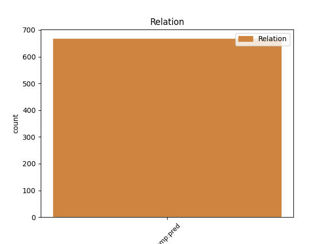
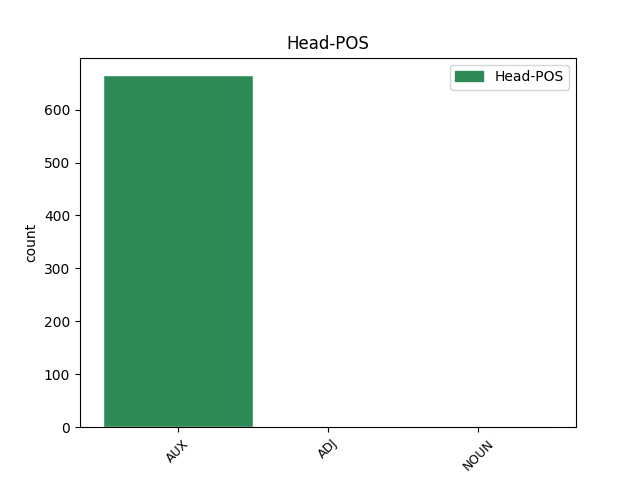
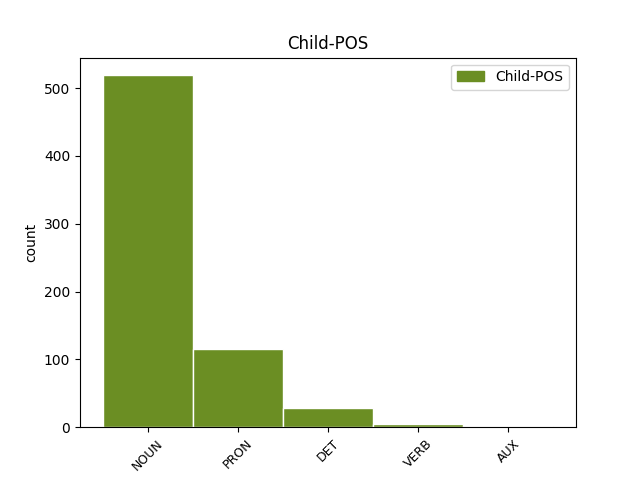

Distribution of features within this leaf



Agreement Rules sorted by frequency.
- When the dependent token is the predicative complements(comp:pred) of the head token, and the head token is AUX and the dependent token is NOUN.
1 sono essere AUX VA Mood=Ind|Number=Plur|Person=3|Tense=Pres|VerbForm=Fin 0 _ _ _
2 promotori promotore NOUN S Gender=Masc|Number=Plur 1 comp:pred _ _
3 di _ _ _ _ 0 _ _ _
4 l' _ _ _ _ 0 _ _ _
5 iniziativa _ _ _ _ 0 _ _ _
6 Patrizia _ _ _ _ 0 _ _ _
7 Cavalli _ _ _ _ 0 _ _ _
8 , _ _ _ _ 0 _ _ _
9 Carlo _ _ _ _ 0 _ _ _
10 Cecchi _ _ _ _ 0 _ _ _
11 , _ _ _ _ 0 _ _ _
12 Alfonso _ _ _ _ 0 _ _ _
13 Berardinelli _ _ _ _ 0 _ _ _
14 , _ _ _ _ 0 _ _ _
15 Cesare _ _ _ _ 0 _ _ _
16 Garboli _ _ _ _ 0 _ _ _
17 , _ _ _ _ 0 _ _ _
18 Piergiorgio _ _ _ _ 0 _ _ _
19 Bellocchio _ _ _ _ 0 _ _ _
20 , _ _ _ _ 0 _ _ _
21 Gianfranco _ _ _ _ 0 _ _ _
22 Bettin _ _ _ _ 0 _ _ _
23 , _ _ _ _ 0 _ _ _
24 Grazia _ _ _ _ 0 _ _ _
25 Cherchi _ _ _ _ 0 _ _ _
26 , _ _ _ _ 0 _ _ _
27 Giorgio _ _ _ _ 0 _ _ _
28 Agamben _ _ _ _ 0 _ _ _
29 , _ _ _ _ 0 _ _ _
30 Goffredo _ _ _ _ 0 _ _ _
31 Fofi _ _ _ _ 0 _ _ _
32 e _ _ _ _ 0 _ _ _
33 Fabrizia _ _ _ _ 0 _ _ _
34 Ramondino _ _ _ _ 0 _ _ _
35 . _ _ _ _ 0 _ _ _
1 Sì _ _ _ _ 0 _ _ _
2 , _ _ _ _ 0 _ _ _
3 è essere AUX VA Mood=Ind|Number=Sing|Person=3|Tense=Pres|VerbForm=Fin 0 _ _ _
4 proprio _ _ _ _ 0 _ _ _
5 lei lei PRON PE Number=Sing|Person=3|PronType=Prs 3 comp:pred _ SpaceAfter=No
6 , _ _ _ _ 0 _ _ _
7 la _ _ _ _ 0 _ _ _
8 Alexanderplatz _ _ _ _ 0 _ _ _
9 che _ _ _ _ 0 _ _ _
10 Doblin _ _ _ _ 0 _ _ _
11 rese _ _ _ _ 0 _ _ _
12 famosa _ _ _ _ 0 _ _ _
13 in _ _ _ _ 0 _ _ _
14 le _ _ _ _ 0 _ _ _
15 sue _ _ _ _ 0 _ _ _
16 pagine _ _ _ _ 0 _ _ _
17 , _ _ _ _ 0 _ _ _
18 dedicate _ _ _ _ 0 _ _ _
19 a _ _ _ _ 0 _ _ _
20 la _ _ _ _ 0 _ _ _
21 piccola _ _ _ _ 0 _ _ _
22 gente _ _ _ _ 0 _ _ _
23 come _ _ _ _ 0 _ _ _
24 " _ _ _ _ 0 _ _ _
25 les _ _ _ _ 0 _ _ _
26 enfants _ _ _ _ 0 _ _ _
27 du _ _ _ _ 0 _ _ _
28 paradis _ _ _ _ 0 _ _ _
29 " _ _ _ _ 0 _ _ _
30 di _ _ _ _ 0 _ _ _
31 Carné _ _ _ _ 0 _ _ _
32 , _ _ _ _ 0 _ _ _
33 la _ _ _ _ 0 _ _ _
34 Alexanderplatz _ _ _ _ 0 _ _ _
35 dove _ _ _ _ 0 _ _ _
36 i _ _ _ _ 0 _ _ _
37 cortei _ _ _ _ 0 _ _ _
38 di _ _ _ _ 0 _ _ _
39 l' _ _ _ _ 0 _ _ _
40 89 _ _ _ _ 0 _ _ _
41 segnarono _ _ _ _ 0 _ _ _
42 la _ _ _ _ 0 _ _ _
43 caduta _ _ _ _ 0 _ _ _
44 di _ _ _ _ 0 _ _ _
45 i _ _ _ _ 0 _ _ _
46 successori _ _ _ _ 0 _ _ _
47 di _ _ _ _ 0 _ _ _
48 Honecker _ _ _ _ 0 _ _ _
49 . _ _ _ _ 0 _ _ _
1 Il _ _ _ _ 0 _ _ _
2 clima _ _ _ _ 0 _ _ _
3 è essere AUX VA Mood=Ind|Number=Sing|Person=3|Tense=Pres|VerbForm=Fin 0 _ _ _
4 tale tale DET DD Number=Sing|PronType=Dem 3 comp:pred _ _
5 che _ _ _ _ 0 _ _ _
6 " _ _ _ _ 0 _ _ _
7 Air _ _ _ _ 0 _ _ _
8 France _ _ _ _ 0 _ _ _
9 " _ _ _ _ 0 _ _ _
10 ha _ _ _ _ 0 _ _ _
11 cancellato _ _ _ _ 0 _ _ _
12 i _ _ _ _ 0 _ _ _
13 suoi _ _ _ _ 0 _ _ _
14 voli _ _ _ _ 0 _ _ _
15 di _ _ _ _ 0 _ _ _
16 ieri _ _ _ _ 0 _ _ _
17 tra _ _ _ _ 0 _ _ _
18 Sydney _ _ _ _ 0 _ _ _
19 e _ _ _ _ 0 _ _ _
20 Parigi _ _ _ _ 0 _ _ _
21 e _ _ _ _ 0 _ _ _
22 tra _ _ _ _ 0 _ _ _
23 Sydney _ _ _ _ 0 _ _ _
24 e _ _ _ _ 0 _ _ _
25 la _ _ _ _ 0 _ _ _
26 Nuova _ _ _ _ 0 _ _ _
27 Caledonia _ _ _ _ 0 _ _ _
28 a _ _ _ _ 0 _ _ _
29 causa _ _ _ _ 0 _ _ _
30 di _ _ _ _ 0 _ _ _
31 lo _ _ _ _ 0 _ _ _
32 sciopero _ _ _ _ 0 _ _ _
33 di _ _ _ _ 0 _ _ _
34 24 _ _ _ _ 0 _ _ _
35 ore _ _ _ _ 0 _ _ _
36 di _ _ _ _ 0 _ _ _
37 i _ _ _ _ 0 _ _ _
38 lavoratori _ _ _ _ 0 _ _ _
39 di _ _ _ _ 0 _ _ _
40 i _ _ _ _ 0 _ _ _
41 trasporti _ _ _ _ 0 _ _ _
42 che _ _ _ _ 0 _ _ _
43 colpisce _ _ _ _ 0 _ _ _
44 aerei _ _ _ _ 0 _ _ _
45 civili _ _ _ _ 0 _ _ _
46 e _ _ _ _ 0 _ _ _
47 militari _ _ _ _ 0 _ _ _
48 francesi _ _ _ _ 0 _ _ _
49 . _ _ _ _ 0 _ _ _
1 E _ _ _ _ 0 _ _ _
2 ha _ _ _ _ 0 _ _ _
3 dovuto _ _ _ _ 0 _ _ _
4 cercare _ _ _ _ 0 _ _ _
5 l' _ _ _ _ 0 _ _ _
6 aiuto _ _ _ _ 0 _ _ _
7 di _ _ _ _ 0 _ _ _
8 Forza _ _ _ _ 0 _ _ _
9 Italia _ _ _ _ 0 _ _ _
10 che _ _ _ _ 0 _ _ _
11 astenendo _ _ _ _ 0 _ _ _
12 si _ _ _ _ 0 _ _ _
13 è _ _ _ _ 0 _ _ _
14 stata essere AUX VA Gender=Fem|Number=Sing|Tense=Past|VerbForm=Part 0 _ _ _
15 in _ _ _ _ 0 _ _ _
16 qualche _ _ _ _ 0 _ _ _
17 modo _ _ _ _ 0 _ _ _
18 determinante determinante VERB V Number=Sing 14 comp:pred _ _
19 a _ _ _ _ 0 _ _ _
20 Montecitorio _ _ _ _ 0 _ _ _
21 per _ _ _ _ 0 _ _ _
22 l' _ _ _ _ 0 _ _ _
23 approvazione _ _ _ _ 0 _ _ _
24 di _ _ _ _ 0 _ _ _
25 il _ _ _ _ 0 _ _ _
26 disegno _ _ _ _ 0 _ _ _
27 di _ _ _ _ 0 _ _ _
28 legge _ _ _ _ 0 _ _ _
29 . _ _ _ _ 0 _ _ _
1 L' _ _ _ _ 0 _ _ _
2 altro _ _ _ _ 0 _ _ _
3 50 _ _ _ _ 0 _ _ _
4 per _ _ _ _ 0 _ _ _
5 cento _ _ _ _ 0 _ _ _
6 sarebbe _ _ _ _ 0 _ _ _
7 stato _ _ _ _ 0 _ _ _
8 suddiviso _ _ _ _ 0 _ _ _
9 in _ _ _ _ 0 _ _ _
10 seguito _ _ _ _ 0 _ _ _
11 , _ _ _ _ 0 _ _ _
12 in _ _ _ _ 0 _ _ _
13 il _ _ _ _ 0 _ _ _
14 giugno _ _ _ _ 0 _ _ _
15 ottantacinque _ _ _ _ 0 _ _ _
16 , _ _ _ _ 0 _ _ _
17 quando _ _ _ _ 0 _ _ _
18 fossero essere AUX VA Mood=Sub|Number=Plur|Person=3|Tense=Imp|VerbForm=Fin 19 comp:pred _ _
19 state essere AUX VA Mood=Ind|Number=Plur|Person=2|Tense=Pres|VerbForm=Fin 0 _ _ _
20 pronte _ _ _ _ 0 _ _ _
21 le _ _ _ _ 0 _ _ _
22 schede _ _ _ _ 0 _ _ _
23 di _ _ _ _ 0 _ _ _
24 valutazione _ _ _ _ 0 _ _ _
25 di _ _ _ _ 0 _ _ _
26 i _ _ _ _ 0 _ _ _
27 singoli _ _ _ _ 0 _ _ _
28 istituti _ _ _ _ 0 _ _ _
29 e _ _ _ _ 0 _ _ _
30 centri _ _ _ _ 0 _ _ _
31 . _ _ _ _ 0 _ _ _
1 A _ _ _ _ 0 _ _ _
2 l' _ _ _ _ 0 _ _ _
3 interno _ _ _ _ 0 _ _ _
4 di _ _ _ _ 0 _ _ _
5 la _ _ _ _ 0 _ _ _
6 comunità _ _ _ _ 0 _ _ _
7 scientifica _ _ _ _ 0 _ _ _
8 italiana _ _ _ _ 0 _ _ _
9 , _ _ _ _ 0 _ _ _
10 in _ _ _ _ 0 _ _ _
11 gli _ _ _ _ 0 _ _ _
12 ultimi _ _ _ _ 0 _ _ _
13 mesi _ _ _ _ 0 _ _ _
14 , _ _ _ _ 0 _ _ _
15 si _ _ _ _ 0 _ _ _
16 è _ _ _ _ 0 _ _ _
17 diffusa _ _ _ _ 0 _ _ _
18 la _ _ _ _ 0 _ _ _
19 sensazione _ _ _ _ 0 _ _ _
20 che _ _ _ _ 0 _ _ _
21 qualcosa _ _ _ _ 0 _ _ _
22 finirà _ _ _ _ 0 _ _ _
23 per _ _ _ _ 0 _ _ _
24 cambiare _ _ _ _ 0 _ _ _
25 in _ _ _ _ 0 _ _ _
26 il _ _ _ _ 0 _ _ _
27 mondo _ _ _ _ 0 _ _ _
28 di _ _ _ _ 0 _ _ _
29 la _ _ _ _ 0 _ _ _
30 ricerca _ _ _ _ 0 _ _ _
31 , _ _ _ _ 0 _ _ _
32 essendo _ _ _ _ 0 _ _ _
33 ormai _ _ _ _ 0 _ _ _
34 chiara chiaro ADJ A Gender=Fem|Number=Sing 0 _ _ _
35 , _ _ _ _ 0 _ _ _
36 a _ _ _ _ 0 _ _ _
37 livello _ _ _ _ 0 _ _ _
38 politico _ _ _ _ 0 _ _ _
39 , _ _ _ _ 0 _ _ _
40 l' _ _ _ _ 0 _ _ _
41 importanza importanza NOUN S Gender=Fem|Number=Sing 34 comp:pred _ _
42 ( _ _ _ _ 0 _ _ _
43 strategica _ _ _ _ 0 _ _ _
44 , _ _ _ _ 0 _ _ _
45 appunto _ _ _ _ 0 _ _ _
46 ) _ _ _ _ 0 _ _ _
47 che _ _ _ _ 0 _ _ _
48 il _ _ _ _ 0 _ _ _
49 settore _ _ _ _ 0 _ _ _
50 riveste _ _ _ _ 0 _ _ _
51 per _ _ _ _ 0 _ _ _
52 il _ _ _ _ 0 _ _ _
53 paese _ _ _ _ 0 _ _ _
54 . _ _ _ _ 0 _ _ _
1 Non _ _ _ _ 0 _ _ _
2 per _ _ _ _ 0 _ _ _
3 confonder _ _ _ _ 0 _ _ _
4 la _ _ _ _ 0 _ _ _
5 , _ _ _ _ 0 _ _ _
6 si _ _ _ _ 0 _ _ _
7 capisce _ _ _ _ 0 _ _ _
8 , _ _ _ _ 0 _ _ _
9 con _ _ _ _ 0 _ _ _
10 quella _ _ _ _ 0 _ _ _
11 di _ _ _ _ 0 _ _ _
12 gli _ _ _ _ 0 _ _ _
13 ascari _ _ _ _ 0 _ _ _
14 di _ _ _ _ 0 _ _ _
15 la _ _ _ _ 0 _ _ _
16 fazione _ _ _ _ 0 _ _ _
17 nemica _ _ _ _ 0 _ _ _
18 , _ _ _ _ 0 _ _ _
19 quelli _ _ _ _ 0 _ _ _
20 che _ _ _ _ 0 _ _ _
21 chiamavano _ _ _ _ 0 _ _ _
22 i _ _ _ _ 0 _ _ _
23 giudici giudice NOUN S Number=Plur 0 _ _ _
24 " _ _ _ _ 0 _ _ _
25 assassini assassino NOUN S Gender=Masc|Number=Plur 23 comp:pred _ SpaceAfter=No
26 " _ _ _ _ 0 _ _ _
27 : _ _ _ _ 0 _ _ _
28 ma _ _ _ _ 0 _ _ _
29 solo _ _ _ _ 0 _ _ _
30 per _ _ _ _ 0 _ _ _
31 richiamare _ _ _ _ 0 _ _ _
32 tutti _ _ _ _ 0 _ _ _
33 - _ _ _ _ 0 _ _ _
34 la _ _ _ _ 0 _ _ _
35 " _ _ _ _ 0 _ _ _
36 claque _ _ _ _ 0 _ _ _
37 " _ _ _ _ 0 _ _ _
38 che _ _ _ _ 0 _ _ _
39 in _ _ _ _ 0 _ _ _
40 il _ _ _ _ 0 _ _ _
41 suo _ _ _ _ 0 _ _ _
42 partito _ _ _ _ 0 _ _ _
43 si _ _ _ _ 0 _ _ _
44 spellava _ _ _ _ 0 _ _ _
45 le _ _ _ _ 0 _ _ _
46 mani _ _ _ _ 0 _ _ _
47 a _ _ _ _ 0 _ _ _
48 ogni _ _ _ _ 0 _ _ _
49 " _ _ _ _ 0 _ _ _
50 iscrizione _ _ _ _ 0 _ _ _
51 in _ _ _ _ 0 _ _ _
52 il _ _ _ _ 0 _ _ _
53 registro _ _ _ _ 0 _ _ _
54 di _ _ _ _ 0 _ _ _
55 gli _ _ _ _ 0 _ _ _
56 imputati _ _ _ _ 0 _ _ _
57 " _ _ _ _ 0 _ _ _
58 , _ _ _ _ 0 _ _ _
59 la _ _ _ _ 0 _ _ _
60 stampa _ _ _ _ 0 _ _ _
61 , _ _ _ _ 0 _ _ _
62 e _ _ _ _ 0 _ _ _
63 magari _ _ _ _ 0 _ _ _
64 gli _ _ _ _ 0 _ _ _
65 stessi _ _ _ _ 0 _ _ _
66 giudici _ _ _ _ 0 _ _ _
67 - _ _ _ _ 0 _ _ _
68 a _ _ _ _ 0 _ _ _
69 un _ _ _ _ 0 _ _ _
70 pò _ _ _ _ 0 _ _ _
71 più _ _ _ _ 0 _ _ _
72 di _ _ _ _ 0 _ _ _
73 misura _ _ _ _ 0 _ _ _
74 e _ _ _ _ 0 _ _ _
75 discrezione _ _ _ _ 0 _ _ _
76 . _ _ _ _ 0 _ _ _
Disagree Examples:
1 Il _ _ _ _ 0 _ _ _
2 raggiungimento _ _ _ _ 0 _ _ _
3 e _ _ _ _ 0 _ _ _
4 il _ _ _ _ 0 _ _ _
5 mantenimento _ _ _ _ 0 _ _ _
6 di _ _ _ _ 0 _ _ _
7 posizioni _ _ _ _ 0 _ _ _
8 competitive _ _ _ _ 0 _ _ _
9 sono essere AUX VA Mood=Ind|Number=Plur|Person=3|Tense=Pres|VerbForm=Fin 0 _ _ _
10 sempre _ _ _ _ 0 _ _ _
11 più _ _ _ _ 0 _ _ _
12 il _ _ _ _ 0 _ _ _
13 risultato risultato NOUN S Gender=Masc|Number=Sing 9 comp:pred _ _
14 di _ _ _ _ 0 _ _ _
15 la _ _ _ _ 0 _ _ _
16 interazione _ _ _ _ 0 _ _ _
17 tra _ _ _ _ 0 _ _ _
18 le _ _ _ _ 0 _ _ _
19 azioni _ _ _ _ 0 _ _ _
20 di _ _ _ _ 0 _ _ _
21 i _ _ _ _ 0 _ _ _
22 singoli _ _ _ _ 0 _ _ _
23 soggetti _ _ _ _ 0 _ _ _
24 ( _ _ _ _ 0 _ _ _
25 non _ _ _ _ 0 _ _ _
26 solo _ _ _ _ 0 _ _ _
27 economici _ _ _ _ 0 _ _ _
28 ) _ _ _ _ 0 _ _ _
29 e _ _ _ _ 0 _ _ _
30 la _ _ _ _ 0 _ _ _
31 disponibilità _ _ _ _ 0 _ _ _
32 di _ _ _ _ 0 _ _ _
33 risorse _ _ _ _ 0 _ _ _
34 presenti _ _ _ _ 0 _ _ _
35 in _ _ _ _ 0 _ _ _
36 il _ _ _ _ 0 _ _ _
37 contesto _ _ _ _ 0 _ _ _
38 socio _ _ _ _ 0 _ _ _
39 economico _ _ _ _ 0 _ _ _
40 di _ _ _ _ 0 _ _ _
41 riferimento _ _ _ _ 0 _ _ _
42 . _ _ _ _ 0 _ _ _
1 ( _ _ _ _ 0 _ _ _
2 nostro _ _ _ _ 0 _ _ _
3 servizio _ _ _ _ 0 _ _ _
4 ) _ _ _ _ 0 _ _ _
5 Oristano _ _ _ _ 0 _ _ _
6 - _ _ _ _ 0 _ _ _
7 Torregrande _ _ _ _ 0 _ _ _
8 , _ _ _ _ 0 _ _ _
9 marina _ _ _ _ 0 _ _ _
10 di _ _ _ _ 0 _ _ _
11 Oristano _ _ _ _ 0 _ _ _
12 : _ _ _ _ 0 _ _ _
13 la _ _ _ _ 0 _ _ _
14 spiaggia _ _ _ _ 0 _ _ _
15 è _ _ _ _ 0 _ _ _
16 lunga lunga ADJ A Gender=Fem|Number=Sing 0 _ _ _
17 chilometri chilometro NOUN S Gender=Masc|Number=Plur 16 comp:pred _ SpaceAfter=No
18 , _ _ _ _ 0 _ _ _
19 sabbia _ _ _ _ 0 _ _ _
20 finissima _ _ _ _ 0 _ _ _
21 e _ _ _ _ 0 _ _ _
22 bianca _ _ _ _ 0 _ _ _
23 . _ _ _ _ 0 _ _ _
1 Le _ _ _ _ 0 _ _ _
2 cassette _ _ _ _ 0 _ _ _
3 di _ _ _ _ 0 _ _ _
4 distribuzione _ _ _ _ 0 _ _ _
5 di _ _ _ _ 0 _ _ _
6 energia _ _ _ _ 0 _ _ _
7 e _ _ _ _ 0 _ _ _
8 di _ _ _ _ 0 _ _ _
9 acqua _ _ _ _ 0 _ _ _
10 sono essere AUX VA Mood=Ind|Number=Sing|Person=1|Tense=Pres|VerbForm=Fin 0 _ _ _
11 quasi _ _ _ _ 0 _ _ _
12 tutte _ _ _ _ 0 _ _ _
13 divelte divellere VERB V Gender=Fem|Number=Plur|Tense=Past|VerbForm=Part 10 comp:pred _ SpaceAfter=No
14 , _ _ _ _ 0 _ _ _
15 molte _ _ _ _ 0 _ _ _
16 addirittura _ _ _ _ 0 _ _ _
17 rubate _ _ _ _ 0 _ _ _
18 . _ _ _ _ 0 _ _ _
1 Una _ _ _ _ 0 _ _ _
2 novità _ _ _ _ 0 _ _ _
3 annunciata _ _ _ _ 0 _ _ _
4 in _ _ _ _ 0 _ _ _
5 il _ _ _ _ 0 _ _ _
6 primo _ _ _ _ 0 _ _ _
7 caso _ _ _ _ 0 _ _ _
8 , _ _ _ _ 0 _ _ _
9 molto _ _ _ _ 0 _ _ _
10 meno _ _ _ _ 0 _ _ _
11 in _ _ _ _ 0 _ _ _
12 il _ _ _ _ 0 _ _ _
13 secondo _ _ _ _ 0 _ _ _
14 ; _ _ _ _ 0 _ _ _
15 ma _ _ _ _ 0 _ _ _
16 entrambe _ _ _ _ 0 _ _ _
17 destinate _ _ _ _ 0 _ _ _
18 a _ _ _ _ 0 _ _ _
19 pesare _ _ _ _ 0 _ _ _
20 se _ _ _ _ 0 _ _ _
21 dovessero _ _ _ _ 0 _ _ _
22 essere _ _ _ _ 0 _ _ _
23 applicate _ _ _ _ 0 _ _ _
24 anche _ _ _ _ 0 _ _ _
25 in _ _ _ _ 0 _ _ _
26 altre _ _ _ _ 0 _ _ _
27 operazioni _ _ _ _ 0 _ _ _
28 , _ _ _ _ 0 _ _ _
29 a _ _ _ _ 0 _ _ _
30 cominciare _ _ _ _ 0 _ _ _
31 da _ _ _ _ 0 _ _ _
32 le _ _ _ _ 0 _ _ _
33 cessioni _ _ _ _ 0 _ _ _
34 di _ _ _ _ 0 _ _ _
35 Stet _ _ _ _ 0 _ _ _
36 ed _ _ _ _ 0 _ _ _
37 Enel _ _ _ _ 0 _ _ _
38 o _ _ _ _ 0 _ _ _
39 se _ _ _ _ 0 _ _ _
40 , _ _ _ _ 0 _ _ _
41 addirittura _ _ _ _ 0 _ _ _
42 , _ _ _ _ 0 _ _ _
43 fossero essere AUX VA Mood=Sub|Number=Plur|Person=3|Tense=Imp|VerbForm=Fin 0 _ _ _
44 il _ _ _ _ 0 _ _ _
45 primo _ _ _ _ 0 _ _ _
46 passo passo NOUN S Gender=Masc|Number=Sing 43 comp:pred _ _
47 in _ _ _ _ 0 _ _ _
48 vista _ _ _ _ 0 _ _ _
49 di _ _ _ _ 0 _ _ _
50 una _ _ _ _ 0 _ _ _
51 più _ _ _ _ 0 _ _ _
52 generale _ _ _ _ 0 _ _ _
53 riforma _ _ _ _ 0 _ _ _
54 di _ _ _ _ 0 _ _ _
55 il _ _ _ _ 0 _ _ _
56 sistema _ _ _ _ 0 _ _ _
57 che _ _ _ _ 0 _ _ _
58 oggi _ _ _ _ 0 _ _ _
59 regola _ _ _ _ 0 _ _ _
60 la _ _ _ _ 0 _ _ _
61 vita _ _ _ _ 0 _ _ _
62 di _ _ _ _ 0 _ _ _
63 le _ _ _ _ 0 _ _ _
64 Spa _ _ _ _ 0 _ _ _
65 . _ _ _ _ 0 _ _ _
1 Dovrebbe _ _ _ _ 0 _ _ _
2 essere _ _ _ _ 0 _ _ _
3 poi _ _ _ _ 0 _ _ _
4 formalizzato _ _ _ _ 0 _ _ _
5 un _ _ _ _ 0 _ _ _
6 mandato _ _ _ _ 0 _ _ _
7 esclusivo _ _ _ _ 0 _ _ _
8 a _ _ _ _ 0 _ _ _
9 la _ _ _ _ 0 _ _ _
10 Banca _ _ _ _ 0 _ _ _
11 Internazionale _ _ _ _ 0 _ _ _
12 Lombarda _ _ _ _ 0 _ _ _
13 per _ _ _ _ 0 _ _ _
14 avviare _ _ _ _ 0 _ _ _
15 le _ _ _ _ 0 _ _ _
16 trattative _ _ _ _ 0 _ _ _
17 con _ _ _ _ 0 _ _ _
18 le _ _ _ _ 0 _ _ _
19 banche _ _ _ _ 0 _ _ _
20 creditrici _ _ _ _ 0 _ _ _
21 per _ _ _ _ 0 _ _ _
22 oltre _ _ _ _ 0 _ _ _
23 600 _ _ _ _ 0 _ _ _
24 miliardi _ _ _ _ 0 _ _ _
25 e _ _ _ _ 0 _ _ _
26 per _ _ _ _ 0 _ _ _
27 l' _ _ _ _ 0 _ _ _
28 impostazione _ _ _ _ 0 _ _ _
29 di _ _ _ _ 0 _ _ _
30 il _ _ _ _ 0 _ _ _
31 piano _ _ _ _ 0 _ _ _
32 di _ _ _ _ 0 _ _ _
33 risanamento _ _ _ _ 0 _ _ _
34 , _ _ _ _ 0 _ _ _
35 le _ _ _ _ 0 _ _ _
36 cui _ _ _ _ 0 _ _ _
37 linee _ _ _ _ 0 _ _ _
38 generali _ _ _ _ 0 _ _ _
39 saranno essere AUX VA Mood=Ind|Number=Plur|Person=3|Tense=Fut|VerbForm=Fin 0 _ _ _
40 il _ _ _ _ 0 _ _ _
41 terzo _ _ _ _ 0 _ _ _
42 argomento argomento NOUN S Gender=Masc|Number=Sing 39 comp:pred _ _
43 di _ _ _ _ 0 _ _ _
44 discussione _ _ _ _ 0 _ _ _
45 . _ _ _ _ 0 _ _ _